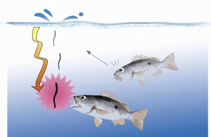
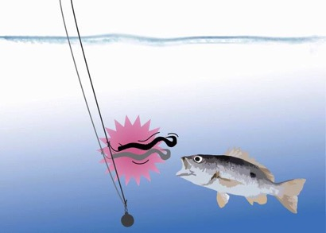
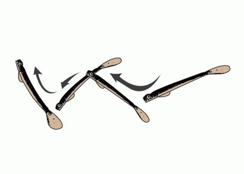
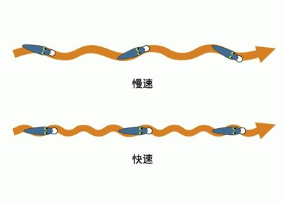
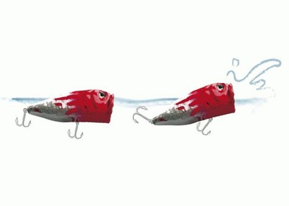
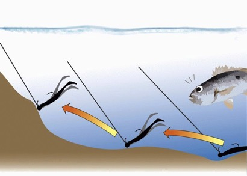

路亚晃饵技巧
路亚毕竟是种拟饵钓法，除了路亚外型的拟真，还必需透过如颜色、光线、泳形、声响等吸引鱼儿上钩。如何让路亚栩栩如生，就必须借由细腻的晃饵手法达到「以假乱真」的效果，如此一来，引诱到鱼儿也就不难了。
一、滞饵(Pause)

为了让路亚沉到预期的钓棚深度，引诱该泳层的鱼儿，就必须以静滞下沉的手法等待路亚到达适当的位置。并且在路亚下沉的过程中仍可以混合短促的抽动、颤动等动作，模仿受伤时一边下沉、一边颤动的生物。
二、颤饵(Twitch)

此动作藉由微小的抖动技巧，模仿饵生物细微的动作。如小鱼、鱼苗在没有天敌压力时，动一下、动一下的泳姿，或是如虾虎一类的鱼总是以跳跃的方式前进。操作上，借由抖动竿尖或短距离收饵（约5～10公分）切勿做出过大的动作。
三、抽饵(Jerk)

当路亚以滞饵的方式抵达对象鱼泳层后，若使用突然的抽饵方式收饵，往往会引来对象鱼的突击，这是因为该收饵过程中，它充分地表现小鱼发现大鱼后，急促且紧张逃跑情形。另一种是规律抽饵模式，该技巧适合模拟小卷、小透抽或某些游一下、停一下的生物、其「间歇性」的泳姿。
四、游饵(Swim)

游饵是最单纯的收饵技巧，可以慢慢地收，模拟落单小鱼漫游地泳姿，这时不妨再加入一些其他收饵技巧，会更加生动，或者也能顺畅且快速地收饵，借以提起对象鱼的掠食意愿。
五、拨水(Pop)

拨水是以剧烈的扯动方式，使拨水路亚或笔型路亚产生推挤水面的水花、水纹与声响，借此吸引对象鱼。该法不能让路亚有长距离移动，否则会减少拨水次数，就是以最小的收饵距离，换取最大声响与水花。
六、跳饵(Hop)

跳饵多是用在底层路亚，模拟虾、蟹、虾虎。这些生物受到惊吓时会跳起来或短距离跳游。所以操作跳饵时，必须注意抽动距离，并仔细地感受路亚落地的感觉与时间，切忌动作太大，使路亚「跳」的距离太远，一则会另对象鱼找不到或受到惊吓，二则太快完成收饵过程，效果将大打折扣。
扫一扫分享